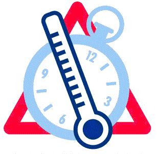

IZKLAIDES LOGS

2 patiesības un 1 aplamība (2P1A)
Spēlē "Divas patiesības un viena aplamība" ir spēle kur spēlētājam tiek piedāvāti trīs apgalvojumi, no kuriem divi ir patiesi un viens ir aplams, un uzdevums ir atrast, kurš apgalvojums ir aplamība.

Mini mīklas
Spēlētājam tiek dots apraksts vai norāde par kādu priekšmetu, vietu, dzīvnieku vai personu, un viņam ir jāuzmin, kas tas ir. Apraksts var būt abstrakts vai īss, un tas var ietvert dažādas norādes.

Info par konvertētāju
Šī mājaslapa ļauj vienkārši pārvērst laiku no stundām uz minūtēm, uz sekundēm un otrādi, kā arī temperatūru no Celsija uz Fārenheitiem, un Kelviniem un otrādi.